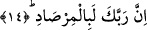

Ebû Hayyân ise “kamçı” kelimesinin istiâre yoluyla azap demek olduğunu
söylemiştir. Çünkü kamçı ve başkalarının aksine tekrar tekrar vurmayı ve tekrarlamayı
gerektirir.
Kâşifî der ki: Araplar kırbaç darbesini en şiddetli azap olarak bildiklerinden her
türlü azaba “kırbaç acısı” derlerdi. Yani kamçı onlara göre azab ve işkencenin en son
sınırıdır. Hak Teâlâ onların bu kelamı gereği, kendi azaplarına “kırbaç azabı” dedi.
Nitekim şair derki:
Görmez misin Allah dinini nasıl etti izhar?
Yedi azap kamçısı, emrine karşı gelen küffâr!
Azabın indirilmesinin “yağdırma” fiili ile ifâde edilmesi onun çokluk, süreklilik ve
peşpeşe geleceğine işâret etmek içindir. Çünkü “yağdırma/dökme” sıvı şeyi dökmek
veya sıvı mesâbesinde olan kum, tahıl taneleri gibi şeyi yukardan aşağıya doğru
akıtmak, şiddetle ve çok boşaltmak/dökmek demektir. “Kamçı yağdırma” bu kabilden
olmadığı halde ona nisbet edilmesi, kamçı yiyen kimsenin peşpeşe aldığı darbelerin
yukardan aşağıya dökülen şeyin damlalarına benzetilmesinden dolayıdır.
Eğer: “Allah Teâlâ: “Eğer Allah insanları zulümleri yüzünden cezâlandıracak
olsaydı, yeryüzünde hiçbir canlı bırakmazdı.” (en-Nahl, 16/61) buyur muyor mu? Bu
âyet azabın âhirete tehir edilmesini gerektirir. Şu halde bu iki âyet birbiriyle nasıl
uzlaştırılır?” diye soracak olursan, biz bu soruya şöyle cevap veririz: Bu âyet bize
cezânın tamamının âhirete tehir edilmesini gerektirir. Bu azâbın/cezânın bir kısmının
dünyada hemen verilmesiyle çelişmez. Çünkü dünyada olan cezânın bir kısmı ve
başlangıcıdır. Nitekim Şeyhzâde Hâşiyesi’nde böyle geçmektedir.
Fakîr (Bursevî) der ki: Bundan daha güzel bir yorum şudur: İnsanların hepsinin
cezâlandırılması ile ilgili âyetten anlaşılan husus, peygamberleri yalanlayan geçmiş bazı
ümmetler gibi insanlardan bazılarının dünyada köklerinin kazınması azâbıyla
cezâlandırılması ile çelişmez.
14. Çünkü Rabbin (her an) gözetlemededir.
Bu âyet yukarıda geçen azabların sebebini bildirmekte ve Hz. Peygamber (a.s.)’ın
kavminin kâfirlerine de zikredilen insanların başlarına gelen azabın benzerinin
geleceğini bildirmektedir. Nitekim bu âyette rubûbiyyet unvânının kullanılması ve onun
“senin rabbin” ifâdesiyle Hz. Peygamber (a.s.)’a izâfe edilmesi de bunu haber
vermektedir.
“Mirsâd” gözetleyicilerin durarak gözetledikleri mekan (gözetleme yeri) anlamınadır.
“Mirsâd” kelimesinin başındaki bâ harfi zarfiyet içindir. Yâni senin Rabbin yoldan
gelip geçenlerin gözetleneceği yerdedir demek olur. “Mirsâd” kelimesinin mübâlağa
kipi olması da mümkündür.
Bu ifâde Allah Teâlâ’nın âsîleri gözetmesi ve onların Allah’ın gözetlemesinden asla